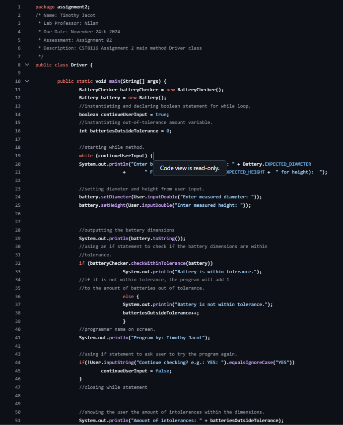
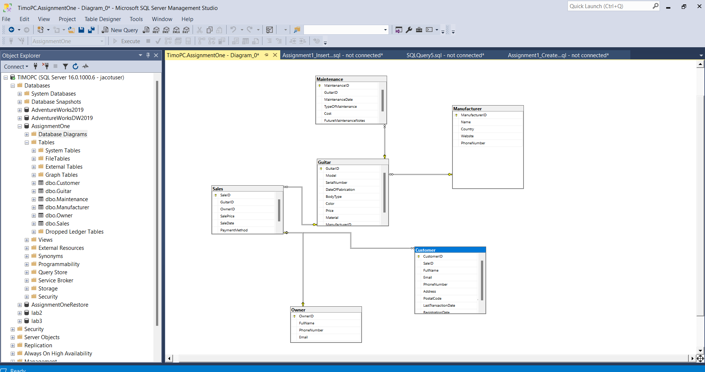
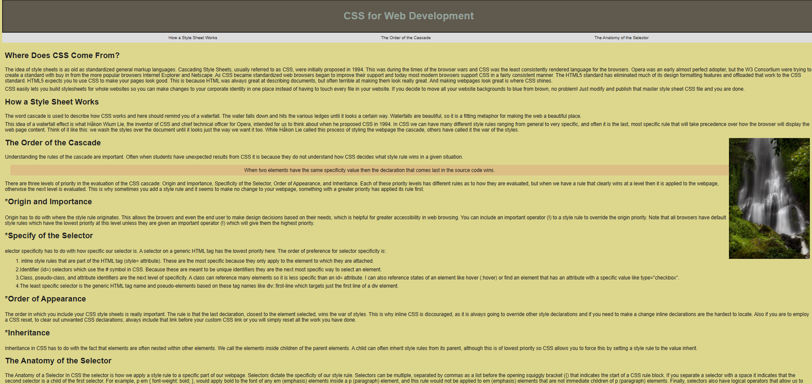
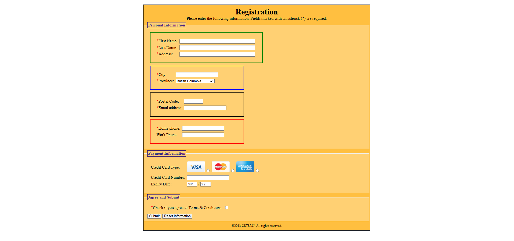

Date of Completion: December 2024
Programming Languages Used:Java
Description: This Object Oriented Java program uses certain Java API's to demand user input from the user, and creates specific outputs based on the input given, using boolean statements and if methods.
Date of Completion:February 2025
Programming Languages / Technologies Used:SQL, MS Access, SSMS
Description:This database project incorporates relational database managements system skills, while demanding the group to insert values and create forms and reports based on the data that has been inserted.
Date of Completion:January 2025
Programming Languages Used:HTML, CS, JavaScript
Description:This is my third lab from my web programming class, where we use interactive CSS and JavaScript tags to make the webpage interactive and accessible through hyperlinks and in-page links.
Date of Completion:January 2025
Programming Languages Used:HTML, CSS
Description:Starting to work on forms and input types during this lab session, while also incorporating CSS to add style and vibrancy to our webpage.
